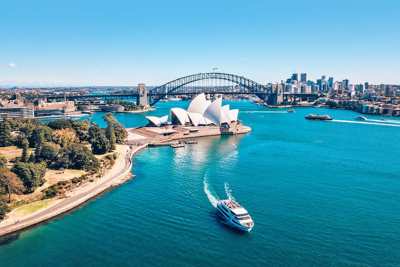
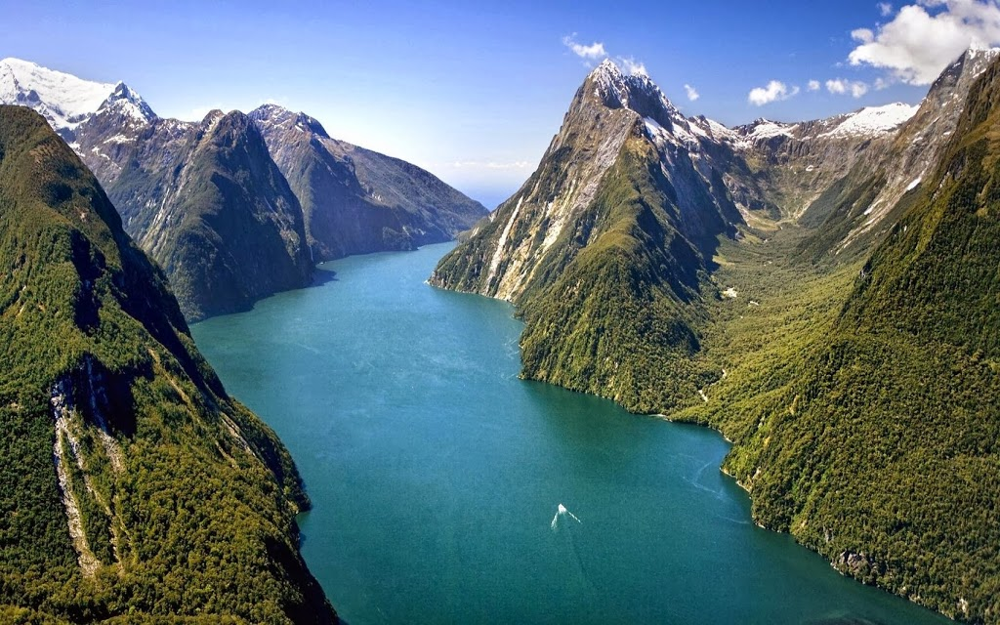
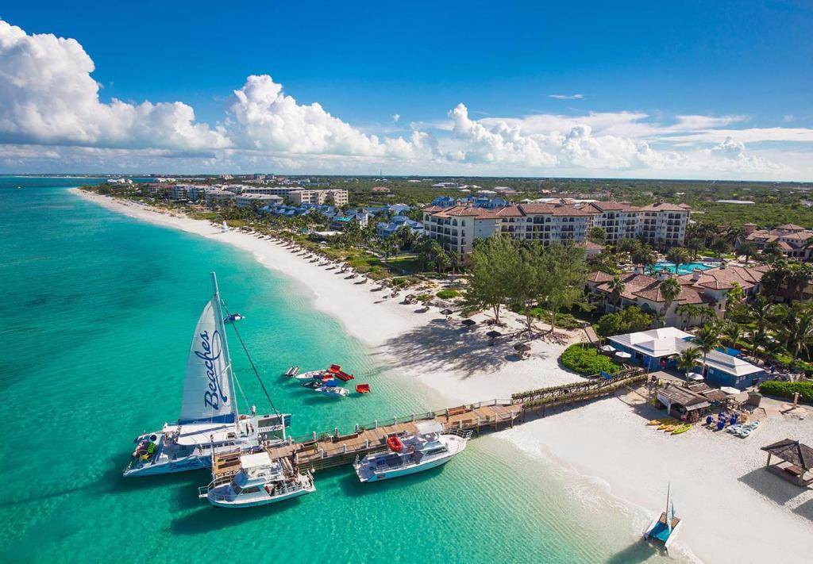

Favorite Attractions
- Sydney Opera House
- Milford Sound
- Great barrier reef
- Grace Bay beach
- Mudjin Harbor
Favorite activities
- Surfing
- Hiking
- Swimming
- Zip lining
- Looking at wildlife
Australia is awesome for lots of reasons! It's got amazing sights like the Sydney Opera House and the Great Barrier Reef. Plus, there's the Outback, which is like a giant desert adventure playground. The beaches are perfect for surfing, and you might even see kangaroos hopping around! Aussies are super friendly, the food is yummy, and there's always something fun to do. So, if you want a cool trip with loads of cool stuff to see and do, Australia's the place to be!
New Zealand is super cool for a bunch of reasons! The scenery is like something out of a dream, with crazy mountains, beautiful beaches, and lush forests everywhere you look. If you're into adventures, there's heaps to do like hiking, skiing, and even jumping off bridges with a bungee cord! The people are friendly, the culture is interesting, and whether you're chilling in a city or exploring the countryside, there's always something fun to see and do. So, if you want an awesome trip with epic views and tons of excitement, New Zealand is where it's at!
Turks and Caicos is like stepping into a picture-perfect postcard! The beaches are insanely beautiful, with super soft sand and water that's bluer than blue. You can snorkel, dive, or just chill out under the sun. Plus, the vibe is super chill, the people are friendly, and the food is delicious. If you're after a totally relaxing vacation in paradise, this is the spot to be!
